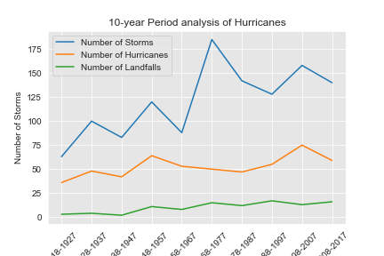
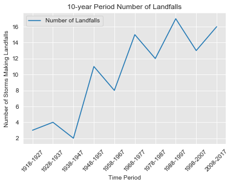

Background
Hurricanes have become increasingly prominent in recent years due to a combination
of factors; most notably, climate change. According to weather.gov, prime conditions
for a hurricane to form include:
- Sea temperature of at least 26 degrees Celsius (80 degrees Farenheit)
- Latitiude of at least 5 degrees N/S of the equator (cannot form at the
intertropical convergence zone
due to the Corioles force that causes hurricanes to spin).
- High relative humidity.
This project will analyze hurricane paths in recent seasons, where storms tend to be
at their strongest, including visual analysis and statistical trends over time.
Data Source
HURDAT2 Data from NOAA
The NOAA records all historical hurricanes and tropical storms in their hurdat dataset.
For this project, we will focus on the Atlantic hurricane seasons from 1850-2017. The data are
structured with recordings every 6 hours (0000, 0600, 1200, 1800). Hence, one limitation of
this dataset is that it does not consider PEAK intensity when determingin strength of a storm,
everything is relative to time.
Analysis
Hypothesis 1
Storms are making more frequent landfalls due to increased strength and duration of systems
Comparison of storm paths
From the above maps, it is evident that there have been significantly more hurricanes in the
last 10 years compared to the 1918-1927 period. Below is a graph comparing number of storms,
number of hurricanes (storms that reached hurricane status), and total number of storms that made
landfall.

Generally, there has been a trend towards higher numbers of all 3 metrics (storms, hurricanes, landfalls),
although there seems to be a spike in the number of storms in the 1968-1977 period, primarily due to the
unusually strong 1970 Atlantic Hurricane Season. Let's take a deeper look at the landfalls for each time
period.

From this plot, it is evident that there has been a steady increase in the number of hurricanes in the last
100 years. While there seems to be a higher number of hurricanes in the 1960s and 70s, this time period
was characterized by shorter, less intense storms. The table below highlights how storm duration tended
to remain fairly constant over time, but recently, there has been a combination of both relatively long
storm durations coupled with more storms overall.
Conclusion: Hypothesis 1 is confirmed; storms ARE making more frequent landfalls, but it is primarily
due to the increase in the number of storms over the last 100 years. Average duration of storms does not
have a significant impact on the frequency of landfalls.
Hypothesis 2
Storms have increased in strength (wind speed) and intensity (minimum pressure) over
time due to rising sea temperatures that have been observed (approximately 0.13 degrees
Celsius per decade over the last 100 years).